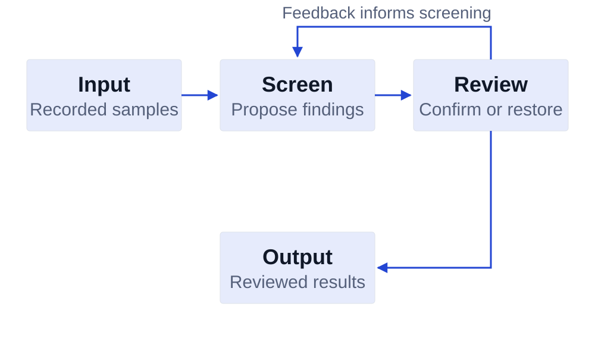

Both panes use the same synthetic recording; this is a player demonstration.

Show the source beside the idea
A compact preview can expand without replacing the workflow.

First failure pattern
Replace with source-bound normal, event and recovery context.
A different failure pattern
Replace with source-bound normal, event and recovery context.
Show what was measured
| Criterion | Recorded outcome |
|---|---|
| First task requirement | Use the actual verdict |
| Second task requirement | Use its matching record |
Separate execution completion from task success. Say whether criteria describe the final state.